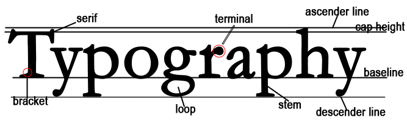
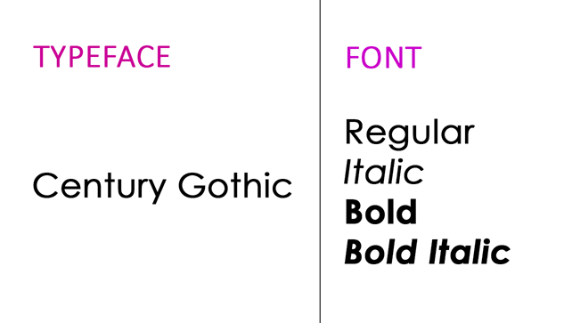

Typography Overview
What is typography? Typography is the craft of organizing letters and text to ensure
that the written content is readable, clear, and visually attractive for the audience.
This art form includes elements such as font style, aesthetics, and structure, all designed
to evoke particular emotions and communicate distinct messages. In essence, typography is what
breathes life into the written word. As a fundamental design concept, typography plays a crucial
role in any creative project. The same words can evoke different feelings based on their design.
Whether you are revitalizing a website, designing a billboard, or crafting a logo, it’s important
to consider how your text can visually express your brand's personality.
Let’s move on to defining various terms that are used in typography. First, there is the
anatomy of typography, as seen in the image below.

- Serif
- A small line or stroke that is consistently connected to the end of a larger
stroke in a letter or symbol within a specific font or font family.
- Bracket
- A curved or angled stroke that links a
letter's serif or terminal to its main stem. Brackets are essential elements
of serif typefaces, enhancing both visual appeal and elegance. They can differ
in shape, thickness, and curvature, playing a significant role in defining a
typeface's overall style.
- Loop
- A rounded stroke that is either fully or partially enclosed,
extending below the baseline of a letter. For example, the lower section
of the letter g.
- Terminal
- The end of a stroke or serif in a letterform. They can have
various shapes and can be classified as open or closed:
- Open terminal: Features a distinct point or angle, resulting in a sharp or angular look
- Closed terminal: Ends with a gentle curve or taper, providing a smoother, more rounded finish
- Ball terminal: Combines a dot or circular stroke with a curved element
- Beak terminal: Displays a sharp spur or beak at the end of a letterform's arm,
accompanied by a curved connection between the beak and the arm
- Teardrop terminal: A decorative terminal that resembles the shape of a teardrop
- Stem
- The primary vertical or diagonal line of a letter is a crucial structural
component that shapes and defines the character's design.
- Cap Height
- The measurement from the baseline to the highest point of uppercase letters in a
typeface, particularly the flat-topped ones like "H" or "I." This metric is crucial in
typography as it determines the height of capital letters in comparison to other characters
within the font, playing a significant role in both legibility and overall visual appeal.
- Ascender Line
- An imaginary line that indicates the height of ascenders in a typeface. Ascenders are
the vertical strokes found on lowercase letters such as "b," "d," and "h," which rise above
the main body of the letter. This line essentially establishes the maximum height that
these ascenders achieve within a font.
- Baseline
- An unseen line that acts as the foundation for letters
and is utilized to gauge other elements.
- Descender Line
- Refers to the part of a letter that extends
below the baseline of a font.
Typeface vs. Font
The primary distinction between these two terms lies in their definitions: a typeface (or type family)
denotes a specific collection of related fonts, while a font refers to an individual weight, width, and
style within that typeface. In simpler terms, each variation of a typeface is classified as a font.

Static vs. Dynamic Layouts
In typography, a "static layout" describes a fixed arrangement of text elements that maintains
a consistent design across various screen sizes. In contrast, a "dynamic layout" modifies its
text formatting according to the viewing device or screen size, enhancing readability on different
platforms, especially on responsive websites and mobile devices. Essentially, a static layout is
unchangeable, while a dynamic layout is adaptable and responsive to its surroundings.
Types of Typefaces
- Serif
- Serif typefaces are recognized for their classic look, characterized by small decorative
strokes or "feet" at the ends of the letters. They work exceptionally well in printed materials
that contain a lot of text, as they help direct the reader's eye along the lines, improving both
readability and comfort. Times New Roman is a notable example.
- Sans Serif
- Sans Serif typefaces, known for their sleek and simple design devoid of "feet," present a
contemporary and minimalist aesthetic. They are adaptable and extensively utilized in both
digital and print formats, ensuring superb readability for website body text, advertisements, and
signage. Arial is a well-known example of a sans serif typeface.
- Decorative
- Decorative or display typefaces come in a wide variety of designs, from playful to unconventional.
They are mainly utilized for eye-catching features such as logos, headings, and standout text in
advertisements. While these fonts can inject a distinctive style into a design, it's important to use
them judiciously, as excessive use may hinder readability. Lobster is an example of this fonts category.
- Script
- Script typefaces emulate the graceful flow of handwriting or calligraphy. They range from relaxed,
informal styles to more refined, structured designs. Script fonts are frequently utilized for invitations,
branding, and decorative applications where a personal, artistic flair is sought. However, because of their
intricate details, they are typically not ideal for body text. Brush Lucida is a good examples of a script
font.
- Monospaced
- Monospaced typefaces, like Courier and Consolas, have characters that share the same horizontal space.
Traditionally utilized in typewriters and coding environments, these typefaces provide consistent alignment
and uniformity. This makes them ideal for technical documentation, coding, and tabular data where precise
text alignment is essential.
suelutz@gmail.com